仿真环境
You can choose language by
环境介绍
该项目的仿真环境基于开源仿真软件webots搭建，仿真环境的背景是模拟现实生活中在室外场景中的目标追踪问题。为此，设立了包括城市街道、市中心、湖边、乡村、沙漠、农田共六张地图，其中每张地图演化出白天、夜晚、雾天、雪天等，总共24个环境。为了方便模型训练从简单的环境开始，还设置了几张简单的环境地图可供使用。
该项目24个仿真环境示意图：


运行流程

demo模式
该模式在地图中生成一个无人机。可以通过键盘操作无人机在地图中飞行，浏览地图。同时该无人机默认跟踪其初始位置附近的一辆BmwX5车辆，并实时把reward参数输出在Console状态栏。可以用该对象测试内置reward参数是否合理，进行调试。
video模式
该模式主要用于记录被跟踪对象的行为。环境将自动调度无人机误差跟踪对象，并且按照仿真时间和配置参数导出视频图像，同时生成对应每张图像的标签。
数据存储的位置为：
./Webots_Simulation/traffic_project/droneVideos/DRONEX/episodeX，图像格式为jpeg，标签为mark.json文件。同时还可以通过脚本生成多组视频图像的文件结构描述，直接执行
./Webots_Simulation/traffic_project/fileStruct.py脚本，在相同目录下生成描述文件dir_info.json。
train模式
该模式用于算法的训练，可以选择先手动打开webots仿真，再运行训练脚本，也可以选择通过修改算法端配置文件实现算法一键全启动。
参数配置
仿真环境的配置文件为
UAV_Follow_Env/Webots_Simulation/traffic_project/config/env_config.json。
基础参数
{
"Simulation_Mode": "train",
"Drone_Supervisor_Ctrl": false,
"Socket_Ip": "127.0.0.1",
"Config_Agen_Num_Port":7789,
"Train_Total_Steps": 3000,
"Init_No_Done_Steps": 100,
"No_Reward_Done_Steps": 100,
"Control_Frequence": 50,
"Customized_Rewards": true,
"Lidar_Enable": false,
"Tracking_Object": "SUMO_VEHICLE"
}
参数说明
Simulation_Mode：仿真模式有三种:”demo”、”video”、”train”。demo与video模式是仿真端自运行的模式（默认demo）。
demo会在地图中生成一个无人机，支持键盘直接控制，同时默认追踪地图中一辆静置车辆Bmx，可以通过该模式浏览地图或者调试reward参数。
video模式是视频拍摄模式，在该模式下无人机会自动跟踪目标对象，导出视频图像和标签。
train是训练模式，仿真端与算法端进行交互，对无人机的追踪算法进行训练。
完整系统运行流程图见： 运行流程
Drone_Supervisor_Ctrl：是否使用supervisor控制无人机，supervisor是webots的超级管理员，可以直接控制任何节点。如果为true，则使用supervisor控制无人机，其所有的动作都是实时无差响应的，这有利于简化算法的训练。如果为false，则使用传统PID控制器控制无人机的运动。
Socket_Ip：socket通信的ip地址，如果为本机通信，默认 “127.0.0.1”。
Config_Agen_Num_Port：配置socket通信端口，该端口用于与算法端进行通信，以确定将要设置的无人机（智能体）数量。
Train_Total_Steps：训练的最大步长数，如果步长超出则返回done。
Init_No_Done_Steps：初始化没有done的仿真步长数，为了防止无人机在初始化的时候物理属性不稳定导致done状态的出发，因此设置该参数在合理大小内。
No_Reward_Done_Steps：连续reward为0时产生done状态的仿真步长。
Control_Frequence：控制算法控制频率。在进行训练时仿真端根据仿真时间进行500Hz的控制频率，该参数用于调整算法端的平均控制频率。
无人机产生done的物理范围参数配置
"Done_Range": {"127.0.0.1"
"max_height": 50,
"min_height": 2,
"velocity": 100,
"omiga": 6.283,
"roll": 1.22,
"pitch": 1.22,
"distance_error": 50
}
参数说明
max_height：无人机最大飞行高度（m）。
min_height：无人机最小飞行高度（m）。
velocity：无人机最大飞行速度（m/s）。
omiga：无人机最大飞行角速度（rad/s）。
roll：无人机最大飞行roll角度（rad）。
pitch：无人机最大飞行pitch角度（rad）。
distance_error：无人机期望位置和当前位置的最大误差（m）。
内置reward的参数配置
"Reward_Config": {
"reward_mode": "continuous",
"distance_scale": 0.01,
"reward_range": 7
}
参数说明
reward_mode：默认reward的模式。continuous产生的是[0，1]之间的连续浮点数 ，而discrete产生的是0或1的整数。
distance_scale：距离比例（默认continuous）。该参数只对continuous模式有效，控制reward因距离误差而衰减的速度。
reward_range：产生reward的距离误差范围。
具体参数含义见： 内置Reward
SUMO交通系统参数配置
"Sumo_Params": {
"max_sumo_car": 60,
"car_import_interval": 60.0,
"car_type": "passenger",
"fixed_color": true,
"normalize_color": [1,0,0],
"max_car_speed": 15,
"max_car_accel": 5,
"max_car_decel": 5,
"max_rou_distance": 8000,
"min_rou_distance": 300,
"route_num": 100000
}
参数说明
max_sumo_car：地图中最大载具数量。
car_import_interval：加入地图每组载具的间隔时间（s）。
car_type：载具的类型（默认passenger），包括“passenger”、“bus”、“truck”、“trailer”、“motorcycle”。
所有支持的载具类型见： SUMO_VEHICLE
fixed_color：是否固定载具颜色。
normalize_color：归一化的RGB颜色向量。
max_car_speed：最大载具移动速度（m/s）。
max_car_accel：最大载具加速度（m/s^2）。
max_car_decel：最大载具减速度（m/s^2）。
max_rou_distance：最大路径长度（m）。
min_rou_distance：最小路径长度（m）。
route_num：路径最大数量（注意是最大，obj_edge_distribution_multilateral实际由于随机化的过程不一定完全成功，会比设置的参数要少）。
其他对象追踪的参数配置
"Other_Params": {
"max_obj_num": 10,
"obj_import_interval": 0.5,
"import_group_num": 4,
"obj_edge_distribution_random": false,
"obj_edge_distribution_multilateral": false,
"obj_edge_distribution_fixed": 0,
"obj_edge_distribution_max":10,
"obj_edge_distribution_min":-10
}
参数说明
max_obj_num：最大对象数量。
obj_import_interval：每组对象加入地图的时间间隔（s）。
import_group_num：每组加入对象的数量。
obj_edge_distribution_random：是否使能对象沿着地图道路两旁随机分布。true，则会在随机路径随机位置的垂直方向随机放置。false，则会在随机路径的随机位置垂直方向固定距离放置。
obj_edge_distribution_multilateral：是否使能双边分布。true，则分布范围为[min, max] ∪ [-max, -min]。false，则分布范围为[min, max]。
obj_edge_distribution_fixed：距离道路中心固定的距离（m）。
obj_edge_distribution_max：距离道路中心最大的距离（m）。
obj_edge_distribution_min：距离道路中心最小的距离（m）。
输出视频的参数配置
"Out_Video": {
"channels": 4,
"fps": 50.0,
"start_time": 1.0,
"total_time": 50.0
}
参数说明
channels：视频通道数量，也就是导入地图中的无人机数量。
fps：根据仿真时间计算的每秒帧数（按照该帧数导出视频图像）。
start_time：视频开始导出的仿真时间（s）。
total_time：视频持续的仿真时间（s）。
无人机控制的参数配置
此组参数用于随机化无人机自身的跟踪属性。
"Drone_Random_Config": {
"start_time_bias_ms": 310,
"view_pitch_random": false,
"view_pitch_fixed": 1,
"view_pitch_random_max": 1.57,
"view_pitch_random_min": 0.7,
"height_random": true,
"height_fixed": 15.0,
"height_random_max": 25.0,
"height_random_min": 13.0,
"direction_random": false,
"direction_random_multilateral": false,
"direction_fixed": 0,
"direction_random_max": 0.1,
"direction_random_min": -0.1,
"horizon_bias_random": false,
"horizon_bias_multilateral": true,
"horizon_bias_fixed": 0,
"horizon_bias_random_max": 3,
"horizon_bias_random_min": 0.1,
"verticle_bias_random": false,
"verticle_bias_multilateral": true,
"verticle_bias_fixed": 0,
"verticle_bias_random_max": 3,
"verticle_bias_random_min": 0.1
}
参数说明
start_time_bias_ms：由于环境初始化需要时间，因此理论上设置的智能体越多，初始化的时间会越长，该参数可以整体调整初始化时间的大小。
注意，总的初始化时间会根据设置智能体的数量增加而增加，比该参数设置的时间要长。
view_pitch_random：无人机摄像头俯仰角随机化。
view_pitch_fixed：上述参数为false，采用该参数定义的角度。
若角度>0则为俯角，反之为仰角。
在使用场景中，俯角是常态。因此仿真环境中该参数的范围限制在
[0.5, 1.57](rad)
view_pitch_random_max：最大摄像头俯角。
view_pitch_random_min：最小摄像头俯角。
height_random：无人机飞行高度随机化。其余参数意义同上。
direction_random：初始视角无人机跟随对象方向随机化，范围[-pi,pi](rad)
direction_random_multilateral：是否启用双边随机化配置。
false,
[min, max];true,[-max, -min] ∪ [min, max]
horizon_bias_random：初始视角无人机跟踪对象水平偏移。如果后续参数为正，则对象向左偏移，如果后续参数为负，则对象向右偏移。其余参数同上。
verticle_bias_random：初始视角无人机跟踪对象竖直偏移。如果后续参数为正，则对象向上偏移，如果后续参数为负，则对象向下偏移。其余参数同上。
部分配置参数建议
To Do仿真器部分的参数配置建议请参考文档： 仿真环境参数配置建议。
跟踪对象
SUMO_VEHICLE
SUMO_VEHICLE由SUMO交通管理系统控制地图中的交通状态，使载具在地图上按照规划的路径行驶。其中，载具的类型可以进行指定。
passenger
客运小型车辆，passenger类型中包含了常见的轿车、SUV、商务车，样式如下：

BmwX5 
CitroenCZero 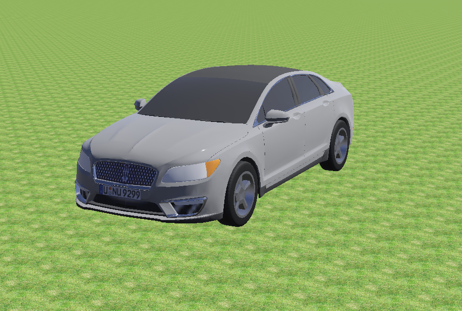
LinkolnMKZ 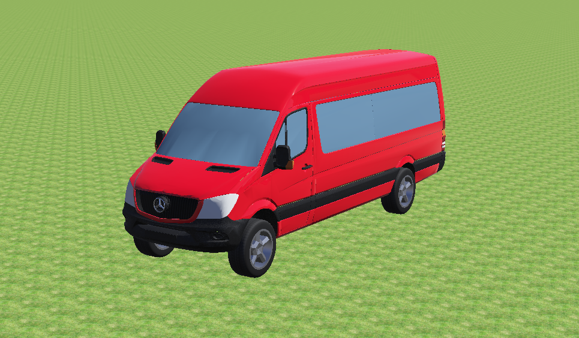
MercedesBenzSprinter 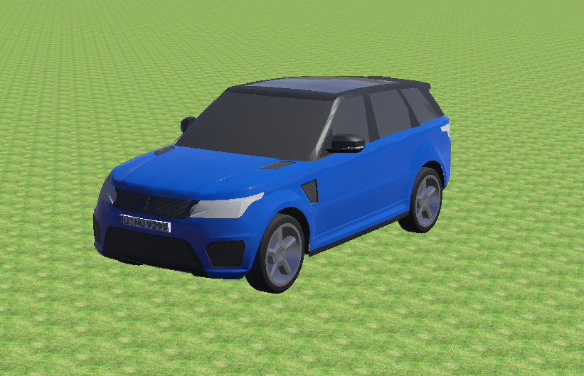
RangeRoverSportSVR 
TeslaModel3 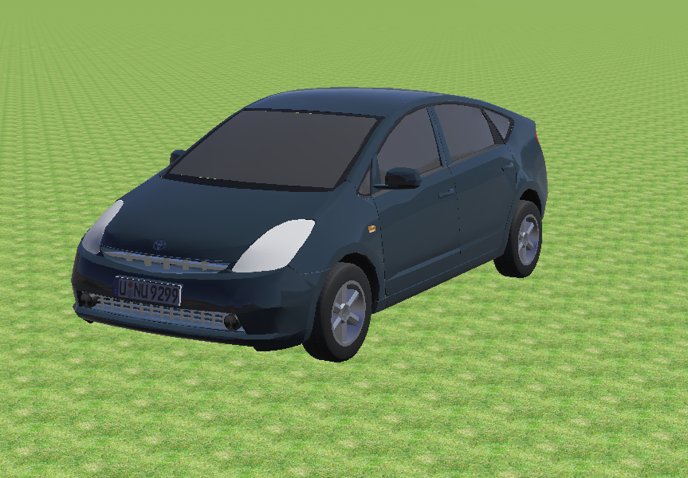
ToyotaPrius
bus
统一车型，大型载客车辆
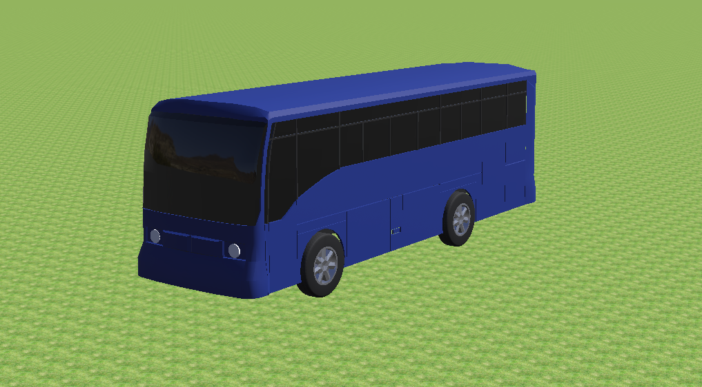
Bus
truck
统一车型，不带货箱的货车
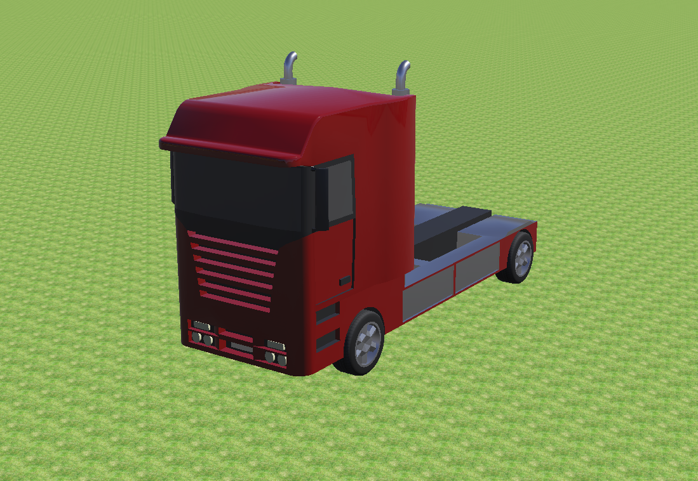
Truck
trailer
统一车型，带货箱的货车
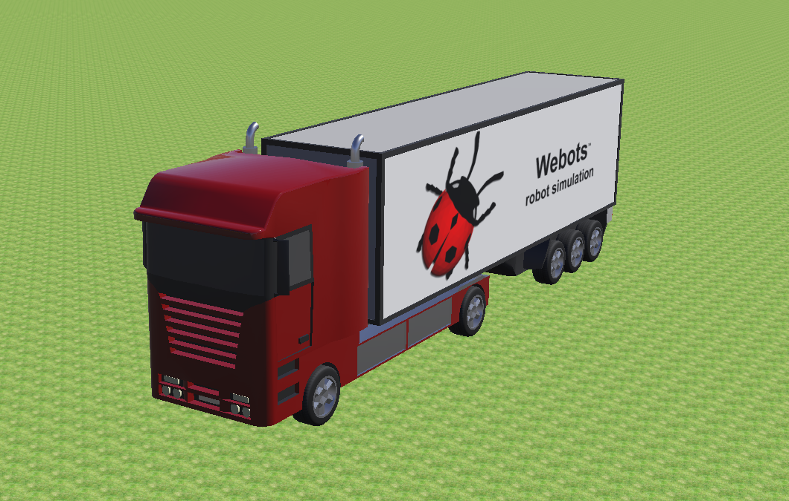
Trailer
Pedestrian
行人对象会按照一定的路线和一定的速度行进，同时人体会模仿真人步态进行运动

Pedestrian
Shrimp
轮式机器人

Shrimp
Create
轮式机器人

Create
Sojourner
月球车

Sojourner
Mantis
大型六足机器人

Mantis
BB-8
球形机器人

BB-8
AiboErs7
四足机器人

AiboErs7
BioloidDog
四足机器人

BioloidDog
FireBird6
轮式机器人

FireBird6
Scout
双足机器人

Scout
GhostDog
四足机器人

GhostDog
Hoap2
双足机器人
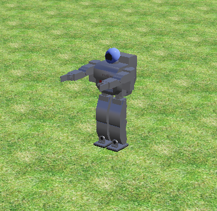
Hoap2
自定义对象
该工程支持自定义被跟踪对象，实现步骤如下：
按照一定标准建立webots使用的描述文件proto文件，其中必须必须开放到场景树的属性包括”translation”，”rotation”，”name”。描述文件存放在
UAV_Follow_Env/Webots_Simulation/traffic_project/protos
场景树属性包
可以选择编写控制器，让被跟踪对象有自主的行为
在webots的
IMPORTABLE EXTERNPROTO模块中载入已经建立的proto文件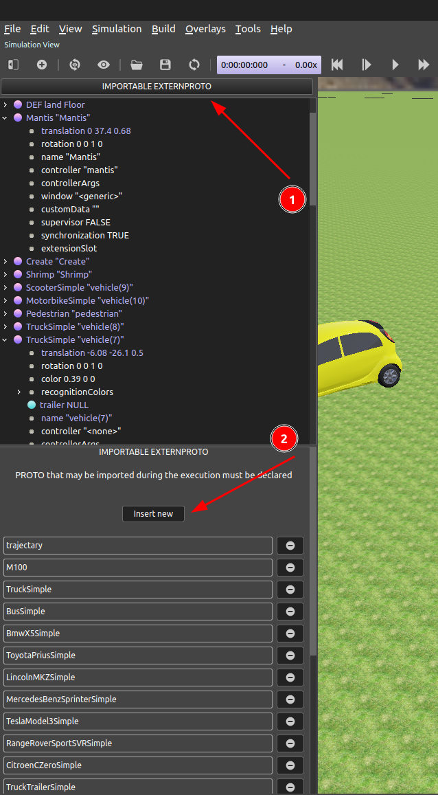
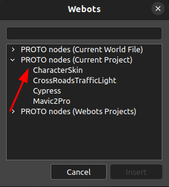
IMPORT PROTO
把proto的名称写进安全检查文件
UAV_Follow_Env/Webots_Simulation/traffic_project/config/safetyCheck.py
安全检查
在json配置文件中修改
Tracking_Object的描述，其描述应当与proto名称相同经过上述步骤就能够使用无人机跟踪自定义对象

内置Reward
由于Webots中超级智能体的存在，我们可以在每个时刻获取飞机以及被跟踪小车的坐标
(xf,yf,zf)以及(xv,yv,zv)，并根据实际摄像头的Pitch角度以及设定的摄像头FOV可以直接判断出跟踪是否成功
基本思路
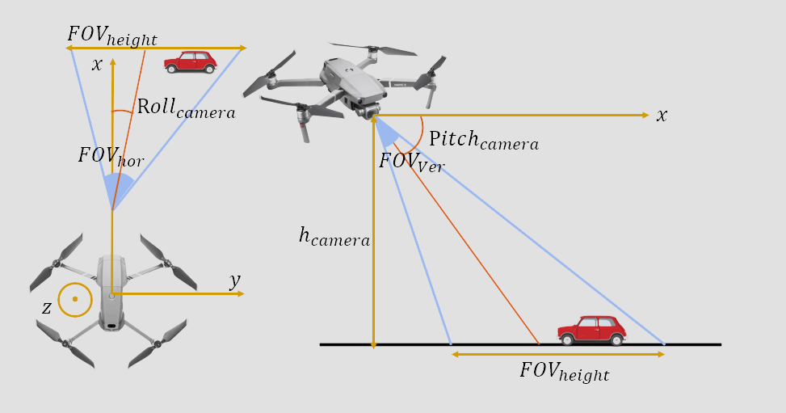
内置Reward获取示意图
首先， 需要从Webots中读出的参数有：飞机的空间坐标 \([x_f,y_f,z_f]\) ，被跟踪小车的空间坐标 \([x_v,y_v,z_v]\) ，摄像头Camera的Roll角度 \(\alpha\) 和Pitch角度 \(\gamma\) 以及Camera的水平视场fieldOfView \(FOV_{hor}\)
则可以根据获取图像的分辨率w*h以及Camera的水平视场计算Camera的垂直视场 \(FOV_{ver}\) ，计算公式为： \(FOV_{ver} = 2*\arctan{(\tan(\frac{FOV_{hor}}{2}*\frac{height}{width}))}\) ，其中先取tan再取arctan是为了将FOV限制在 \([0,\pi]\) 范围内
因此，可以计算在当前Camera位姿下，相机FOV对应的实际x方向范围 \([x_{min},x_{max}]\) ，以及Camera视场对应的实际距离 \(FOV_{height}\) ，计算公式如下：
\(x_{min} = \frac{z_f}{\tan{(\frac{FOV_{ver}}{2}+\gamma)}}\)
\(x_{max} = \frac{z_f}{\tan{(|\gamma-\frac{FOV_{ver}}{2}|)}}\)
\(FOV_{height} = x_{max}-x_{min}\)
因此，可以根据图像中得到的检测点坐标，映射到实际的世界坐标系中
在上述结果的基础上，可以得到Camera在当前位姿下对应的y方向视场范围 \([y_{min},y_{max}]\) ，以及实际距离 \(FOV_{width}\)
\(y_{min} = FOV_{height}*\tan{(|\alpha-\frac{FOV_{ver}}{2}|)}\)
\(y_{max} = FOV_{height}*\tan{(\alpha+\frac{FOV_{ver}}{2})}\)
\(FOV_{width} = y_{max}-y_{min}\)
因此可以根据图像中检测点的y坐标映射到实际的坐标系中
因此，在图像中检测到的像素坐标
[x,y]可以被映射为世界坐标系中的坐标点（高度为0）[x',y',z']
对于小车在斜坡上的情况，如下图所示：
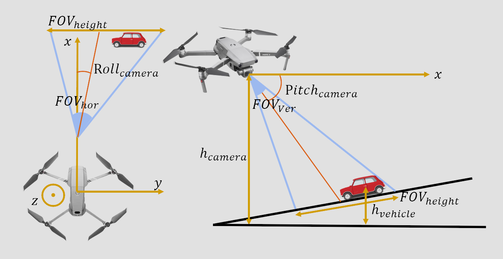
小车在斜坡情况内置Reward获取示意图
依然可以按照之前的方案进行计算，但是斜坡应该仅和x或和y有关，不应该有弯曲的斜坡，否则很难进行判断
实际上，由于webots接口足够完善，只需要知道无人机什么时候在观察斜坡即可，斜坡可以有一定的复杂性（但每一段必须是平面，不能是曲面）。
投影可视化
按照上述原理实现之后效果如下视频：
注意：视场角上限不能超过地平线，否则计算结果没有意义。
如何转化为Reward
(对于跟踪算法而言：如Follow_Anything)用于计算reward共有三个变量：
跟踪算法输出被跟踪目标的像素点中点，并且投影到地面坐标系的二维位置，记为P1
仿真环境中被跟踪目标在地面坐标系中的实际位置，由Supervisor获得，记为P2
仿真环境中无人机摄像头视平面的期望跟踪点，投影到地面坐标系的二维位置，记为P3
(对于强化学习算法为而言：如D-VAT)用于计算reward共有两个变量：
仿真环境中被跟踪目标在地面坐标系中的实际位置，由Supervisor获得，记为P1
仿真环境中无人机摄像头视平面的期望跟踪点，投影到地面坐标系的二维位置，记为P2
首要目标是实现无人机tracking，是否正确tracking是获得奖励的前提。因此要求P1与P2之间的距离在给定范围以内，即可获得奖励值1，在给定范围以外，直接消除所有奖励，输出奖励0。使用阶跃函数实现：

阶跃函数示意图

次要目标是无人机tracking得更好。因此P1与P3之间的距离可以作为奖励的惩罚项。距离越远惩罚越大。使用正切双曲线函数实现： \(f(x)=\frac{e^{αx}-e^{-αx}}{e^{αx}+e^{-αx}}\)

双曲正切函数示意图

最终的奖励计算框图如下：

奖励框图

定制化参数接口
输入动作
输入动作用于控制无人机的运动，目前无人机有四个动作，前进，后退，左移，右移，加上reset数据共5个浮点数
返回参数
返回参数主要包括三个部分，基础数据包，自定义奖励数据包，雷达数据包
基础数据包
基础数据包共22个浮点数，如下所示：
typedef struct _Odometry{ double t;// 仿真步数（不是仿真时间） vector3 position;//三轴位置m vector3 linear;//三轴线速度m/s vector3 acc;//三轴加速度m/s^2 vector3 angular;//三轴角速度rad vector4 orientation;//四元数 vector3 angle;//欧拉角 double reward;//reward double done;//是否结束仿真 }Odometry;
自定义奖励数据包
自定义奖励数据包共51个浮点数+1个字符串，包括以下部分
typedef struct _rewardData{ double cameraWidth;// 图像宽度（像素） double cameraHeight;// 图像高度（像素） double cameraFov;// 摄像头视场角（rad）[0,pi` ] double cameraF;// 摄像头焦距估算（像素） double T_ct[16];// 摄像头相对于世界坐标系的齐次变换矩阵 double T_tw[16];// 车辆相对于世界坐标系的齐次变换矩阵 vector3 cameraMidGlobalPos;// 摄像头中心映射到地面在世界坐标系下的三维坐标 vector3 carMidGlobalPos;// 车辆中心在世界坐标系下的三维坐标 vector3 cameraMidPos; // 摄像头中心世界坐标系的坐标 vector4 carCameraPosOri; // 车辆中心在无人机坐标系下的1D姿态+3D坐标（第一个元素是姿态） double crash; // 无人机是否与建筑物碰撞 double carDir;// 车辆运行方向(0停止，1直行，2左转，3右转) std::string carTypename;// 对象类型 }rewardData;
其中，参数
carCameraPosOri中无人机坐标系定义和姿态角定义如下：
无人机坐标系定义


雷达数据包
雷达点云数据。该环境中的无人机搭载了RpLidarA2单线雷达，其点云数据将输出一个很长的数组。
To Do: 把Webots现有的可以增加的雷达也加入进去吧